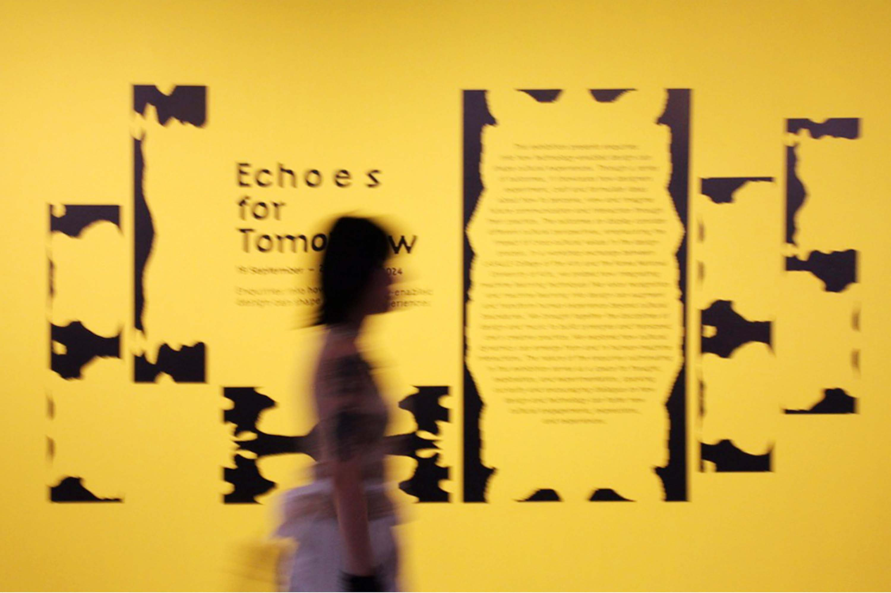
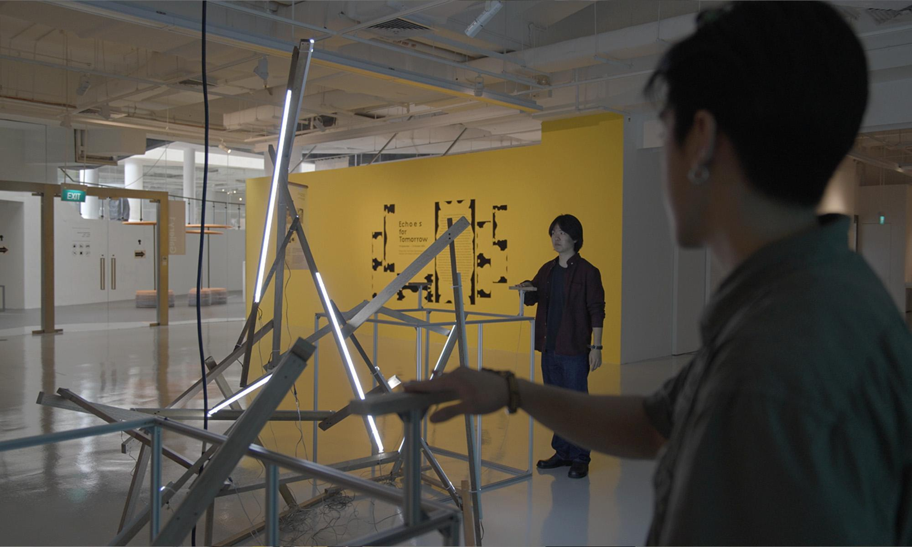
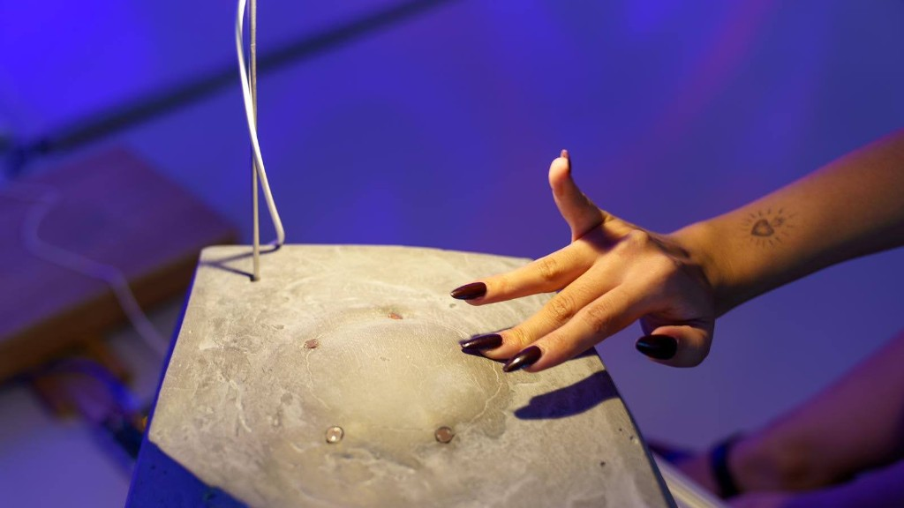
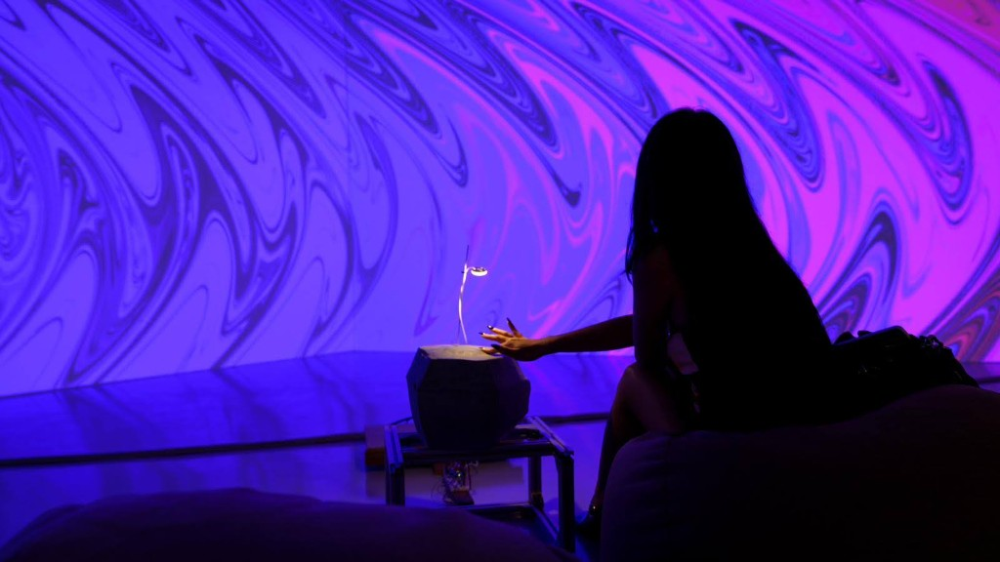
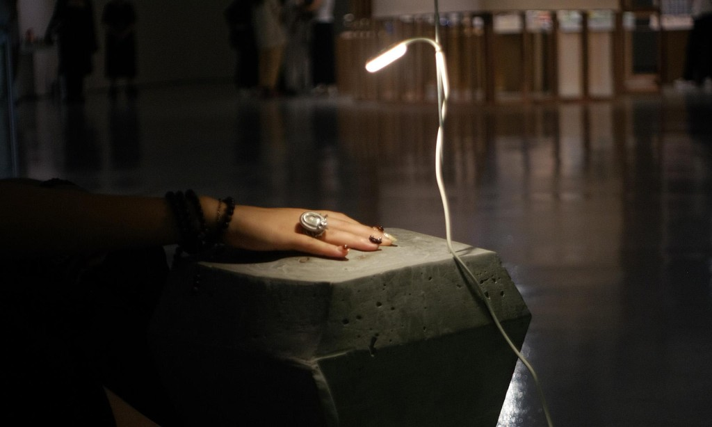
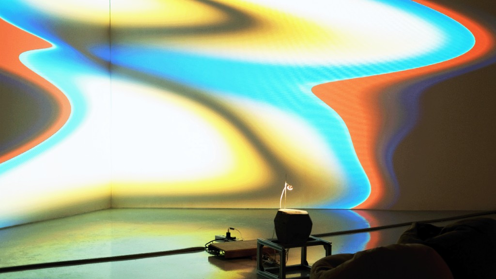
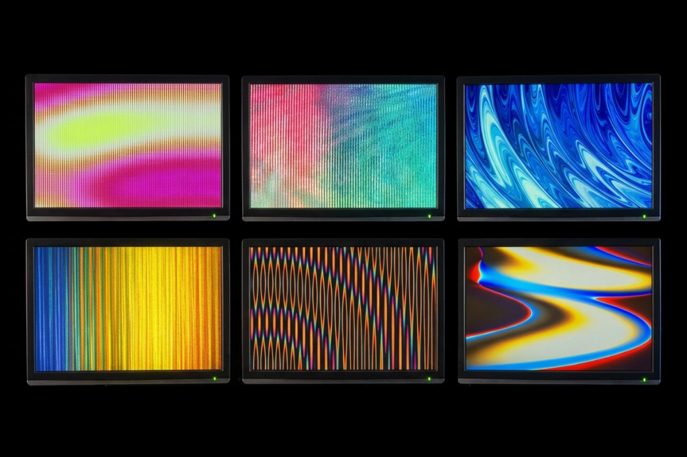
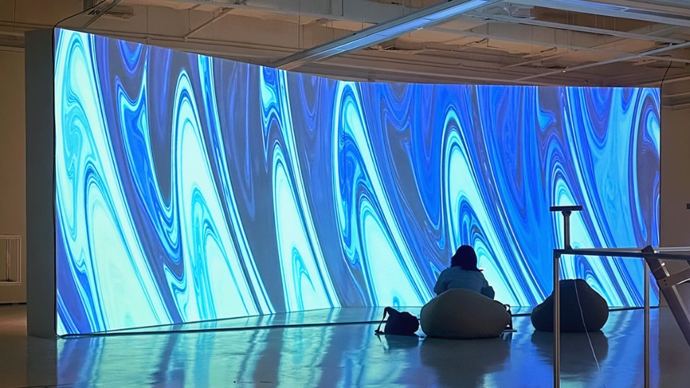

Stone is a touch-based concrete interface that controls a projected installation. It is part of the first section of Yunso's Triangle, along with Mind in Motion and Dream Journal.
Stone is a concrete interface that controls a projection. It is part of the first section of Yunso's Triangle, along with Mind in Motion and Dream Journal.
Echoes for Tomorrow
The exhibition asks how technology-enabled design can shape cultural experiences.[1]
It grew from a workshop exchange between LASALLE College of the Arts and the Korea National University of Arts. The works on display take up different cultural perspectives, and the effect of those values on the design process.
Jung worked with the team on visual identity, curation, production, and setup. Her main role was creative coding for the interactive works.
The exhibition asks how technology-enabled design can shape cultural experiences.[1] It grew from a workshop between LASALLE College of the Arts and the Korea National University of Arts. Jung's main role was creative coding.
-

Title wall -

Gallery
Concept
The work asks what a computer is in its most elemental state. What if it were a stone?[2]
When a participant hovers a hand over the surface, the projected visuals shift in response. The system cycles through five visual states, changing every minute.
What if a computer were a stone?[2] A hand over the surface shifts the projection through five visual states.
-

Interface -

Projection
Interface
The interface is a stone-like object cast in concrete, treated as a physical interface. Five sensors, read by an Arduino microcontroller, are embedded in the object so it can detect touch.
Cast in concrete, with five sensors read by an Arduino so it can detect touch.
-

Stone -

Installation
Visuals
The visuals are created with shaders in Processing. Each sensor is mapped to a different parameter, such as colour, scale, and quantity. The visuals are projected onto a 3 m high, 8 m wide wall, with the calibration adjusted for scale and for how the work is experienced.
Shaders in Processing map each sensor to colour, scale, or quantity, on a 3 m by 8 m wall.
-

Visuals -

Projection Wall
References
- “Echoes for Tomorrow”. Singapore Art & Gallery Guide. sagg.info. ↑
- Jung, Yunso (2024). Stone. jungyunso.com. ↑